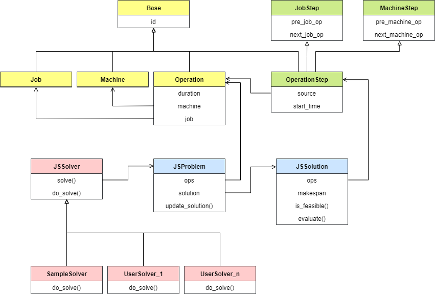
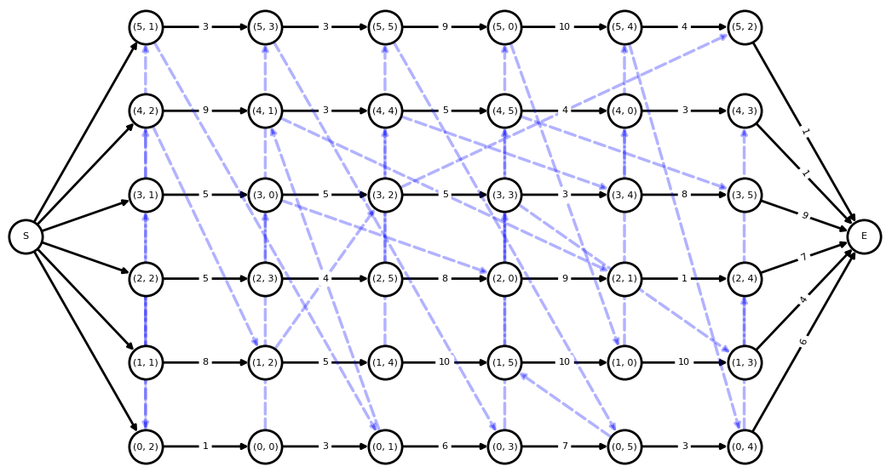

作业车间调度问题求解框架：Python建模¶
发布于：2021-08-14 | 分类：optimization , python/vba/cpp
基于前文对作业车间调度问题的定义和描述，本文进行Python建模，开发了一个通用的作业车间调度问题求解框架，把问题分解、抽象为可重用的部分，从而专注求解算法的开发、实施和验证。
框架结构¶
整个求解框架基于Python面向对象编程实现，主要结构参考下图。

其中，所有对象按用途可以归为三类：
（1）物理对象¶
Job作业实体Machine机器实体Operation工序实体，包含所属作业、分配的机器、加工时长等属性JSProblem是所有工序实体Operation的封装
（2）求解变量¶
OperationStep是工序实体Operation 的封装，同时加上待求解的参数 start_time。根据前文关于作业车间问题的两种不同的描述方式，相应有两种不同的求解思路：
- 对于以
start_time为变量描述的数学模型，直接求解start_time即可。 - 对于以 析取图 描述的模型，需要先求解工序的顺序，然后递推出
start_time。
因此，对于析取图描述的模型，还提供了以下中间属性：
-
pre_job_op和next_job_op，分别表示当前工序在所属作业实体上的顺序：前一道工序和下一道工序；并且，它们是已知的。 -
pre_machine_op和next_machine_op，分别表示当前工序在分配机器上的加工顺序：前一道工序和下一道工序；注意这个顺序即为需要求解的变量。
（3）求解流程¶
-
JSSolver是作业车间调度问题求解器的基类，便于继承此基类后实施新算法。- 它的解为一个
JSSolution实例 - 每当获得一个更好的解，需要使用
update_solution(sol)方法显式更新
- 它的解为一个
-
JSSolution是所有OperationStep的封装：is_feasible属性判断当前解是否满足所有约束；如果是一个可行解，makespan属性得到最大加工周期长度。- 此外，还有一些后处理作图方法，例如甘特图和析取图。
实施新算法¶
以上的设计可以避免重复工作，从而专注于算法本身的实现和测试。基于此框架，实施新算法只需创建自定义求解器类，然后继承 JSSolver 并实现 do_solver() 方法。do_solver() 方法内部主要分为三大步骤：
-
基于问题创建初始状态的解（注意并非可行的 初始解）。
# direct_mode 指明是直接求解 start_time（True），还是以析取图模型间接求解（False） solution = JSSolution(problem, direct_mode=False) -
实施算法，计算或者优化这个解。
-
对于以
start_time为变量描述的数学模型，直接求解并更新每个工序即可。
- 对于以析取图描述的模型，需要先求解工序的顺序，然后依次调度工序即可。其中，OperationStep.update_start_time(t)update_time参数指明是否及时更新工序的start_time。JSSolution.dispatch(op_or_op_list, update_time=True)
-
-
每次迭代得到更好的解后，显式更新给求解器，以便触发动态甘特图的更新、自定义回调函数的调用。
JSSolver.update_solution(solution)
关键代码参考：
# user defined path, e.g. path/to/UserSolver.py
from jsp import (JSProblem, JSSolution, JSSolver)
class UserSolver(JSSolver):
def do_solve(self, problem:JSProblem):
"""User defined solving process."""
# (1) Initialize an empty solution and specify solving mode.
# * direct_mode=True, solve start time directly;
# * direct_mode=False, solve operations sequence first and deduce start time
solution = JSSolution(problem, direct_mode=False)
# (2) Solve or optimize the solution.
for op in solution.ops:
# option 1: solve and set start time directly
...
op.update_start_time(solved_start_time)
# option 2: solve sequence
...
self.dispatch(op)
# optional: update solution per iteration,
# triggering dynamic Gantt and callback
self.update_solution(solution)
# (3) Update solution finally
self.update_solution(solution)测试算法¶
框架已经内置了作业车间调度问题的标准问题数据，便于根据名称直接初始化问题。更多基本问题数据 参考。
（1）单个算法单个问题¶
单个算法求解单个问题主要用于算法调试阶段，solve()方法中的两个参数：
-
interval以一定的频率检测和动态显示当前解的甘特图，如果设为None则不显示甘特图 -
callback在每次获得更好的解后执行自定义的动作，例如打印这个解
以下示例调用内置的规则指派类求解器 PriorityDispatchSolver 求解 ft06 问题。因为设置了interval参数，优化过程中会以2秒的频率动态更新甘特图。
# run.py
from jsp import JSProblem
from jsp.solver import PriorityDispatchSolver
# load benchmark problem
problem = JSProblem(benchmark='ft06')
# solve problem with user defined solver
s = PriorityDispatchSolver(rule='HH')
fun = lambda solution: print(f'current makespan: {solution.makespan}')
s.solve(problem=problem, interval=2000, callback=fun)
注意：solve()是在子线程中进行的异步方法，所以如果需要获取优化结果，需要通过JSSolver.wait()方法来等待计算完成。下面示例获取最终结果，并绘制析取图。
# start solving process
s.solve(...)
# waiting
s.wait()
print('Solving time ', s.user_time)
print('Makespan ', s.solution.makespan)
# explore solution
solution = s.solution
print('feasible solution:', solution.is_feasible)
solution.plot_disjunctive_graph()
（2）多个算法多个问题¶
当算法调试稳定后，我们需要测试它在不同规模问题上的表现，或者对比不同算法对相同问题的求解效率。针对此类场景，本框架内置了 Benchmark 类：排列组合输入的求解器和问题，然后进行多线程异步求解，最后对比结果。显然，Benchmark 类也适用于单个算法单个问题的场景。
下面例子演示了两类求解器，Google OR-Tools整数规划和规则指派算法，求解不同规模的5个问题的对比。
# benchmark.py
import logging
from jsp import (JSProblem, BenchMark)
from jsp.solver import (GoogleORCPSolver, PriorityDispatchSolver)
# ----------------------------------------
# create problem from benchmark
# ----------------------------------------
names = ['ft06', 'la01', 'ft10', 'swv01', 'la38']
problems = [JSProblem(benchmark=name) for name in names]
# ----------------------------------------
# test built-in solver
# ----------------------------------------
# googl or-tools
s1 = GoogleORCPSolver(max_time=300, name='or-tools')
# priority dispatching
s2 = PriorityDispatchSolver(rule='HH', name='pd-HH')
solvers = [s1, s2]
# ----------------------------------------
# solve and result
# ----------------------------------------
benchmark = BenchMark(problems=problems, solvers=solvers, num_threads=4)
benchmark.run(show_info=True)结果示例：
+----+---------+----------+---------------+---------+----------+---------+-------+
| ID | Problem | Solver | job x machine | Optimum | Solution | Error % | Time |
+----+---------+----------+---------------+---------+----------+---------+-------+
| 1 | ft06 | or-tools | 6 x 6 | 55 | 55 | 0.0 | 0.1 |
| 2 | ft06 | pd-HH | 6 x 6 | 55 | 60.0 | 9.1 | 0.0 |
| 3 | la01 | or-tools | 10 x 5 | 666 | 666 | 0.0 | 0.1 |
| 4 | la01 | pd-HH | 10 x 5 | 666 | 666.0 | 0.0 | 0.0 |
| 5 | ft10 | or-tools | 10 x 10 | 930 | 930 | 0.0 | 14.9 |
| 6 | ft10 | pd-HH | 10 x 10 | 930 | 1082.0 | 16.3 | 0.0 |
| 7 | swv01 | or-tools | 20 x 10 | 1407 | 1432 | 1.8 | 300.3 |
| 8 | swv01 | pd-HH | 20 x 10 | 1407 | 1839.0 | 30.7 | 0.2 |
| 9 | la38 | or-tools | 15 x 15 | 1196 | 1196 | 0.0 | 300.3 |
| 10 | la38 | pd-HH | 15 x 15 | 1196 | 1387.0 | 16.0 | 0.2 |
+----+---------+----------+---------------+---------+----------+---------+-------+